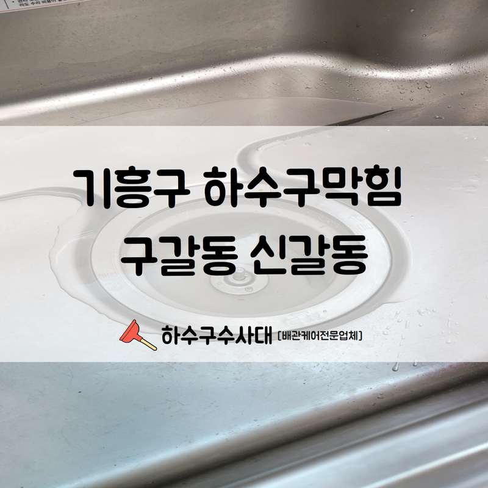
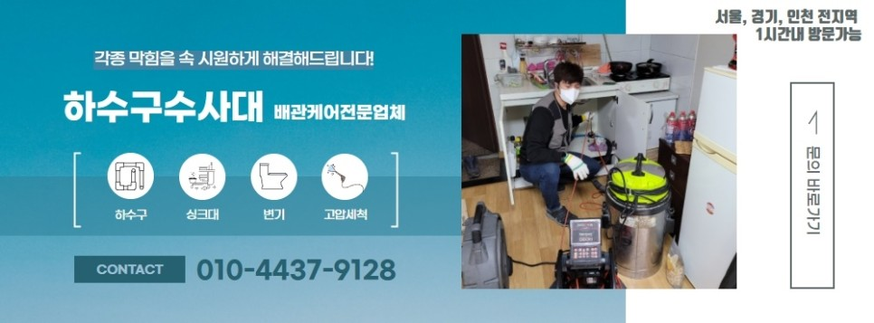

🏠 기흥구 하수구막힘 구갈동 신갈동까지 출동하여 문제를 해결해 드립니다!
용인 기흥 하수구막힘 전문 시공 후기

📋 작업 개요
- 위치: 용인 기흥, 기흥, 용인
- 서비스 유형: 하수구막힘, 배관막힘, 역류해결, 배관청소, 고압세척, 악취차단
- 작업 일시: 2022. 8. 2. 13:27
- 업체명: 하수구수사대 (010-5615-2118)
🔍 문제 상황
안녕하세요.하수구수사대 입니다.반갑습니다.
기흥구 하수구막힘 구갈동 신갈동까지 출동하는 하수구수사대가 인사드립니다. 최대한 넓은 지역을 케어하면서 의뢰인 분들의 답답함을 덜어드리기 위해 노력하고 있습니다. 특히 여름이 되면 이런 문제로 문의를 많이 해주십니다.
기흥구 하수구막힘 구갈동 신갈동 배관 문제까지 해결해 드립니다.
우리가 평소 집에서 사용하는 물 역시도 깨끗한 사용을 위해 청소를 해주는 작업이 필요합니다. 수돗물이 안전한 건 사실이지만 수돗물만 안전하다고 해서 우리가 사용하는 물 자체가 안전해지는 것은 아닙니다. 수돗물이 나오는 통로가 안전하지 못한 경우 건강에 심각한 손상을 초래하기도 합니다.
하수구가 막혔거나 역류하거나 냄새가 심하거나 안쪽에 뭔가 문제가 생긴 것으로 판단하여 문의하시는 경우가 많습니다. 현장에 출동해 확인하면 오래된 배관, 내부 세척 상태 미흡, 잘못된 사용 등으로 인해 이런 문제가 많이 발생합니다.

🔎 원인 분석
💡 전문가 진단: 기흥구 하수구막힘 구갈동 신갈동 배관 문제까지 해결해 드립니다.
시공과 마무리 세척까지 진행해드립니다.
기흥구 하수구막힘 구갈동 신갈동 현장 방문을 통해 문제 해결과 집안 배관 세척까지 모두 해드리고 있습니다. 실제로 전문가들 역시 입을 모아 말하는 내용입니다.
아무리 지자체에서 열심히 정수하여 물을 공급해 봤자 집안에 있는 수도관이 오염된 상태라면 소용이 없기 때문에 관심을 가져야 합니다. 필터를 사용하는 것은 물론이고 배관 안쪽에 녹슬진 않았는지, 슬러지는 없는지, 다른 오염은 없는지 확인해야 합니다.
특히 오래된 배관이라면 더 조심하셔야 합니다.
오래된 배관, 기흥구 하수구막힘 구갈동 신갈동 배관 세척 등 여러 가지 의뢰를 맡겨주시면 최대한 빨리 문제를 해결하거나 도와드리고 있습니다. 오래된 배관의 경우 교체 작업을 해줘야 합니다.
배관 역시 수명이 있기 때문에 적절한 시기에 교체를 해줘야 하며 과거 사용되었던 배관 같은 경우 수명이 짧은 편이고 효율이 떨어지기 때문에 안정적이라 보긴 어렵습니다. 그에 반해 최근 나온 배관들은 모두 성능이 상향되었습니다.

🔧 작업 과정
평소에도 관리가 필히 필요합니다.
하수구를 조금이라도 깨끗하게 관리하고자 한다면 평소에도 버리는 것들을 이용해 관리를 해볼 수 있겠습니다. 가령 김이 빠진 맥주를 하수구에 부어주는 것만으로도 악취를 감소시키는 효과를 볼 수가 있습니다.
또 악취가 지속적으로 올라온다면 트랩을 씌워 악취가 올라오는 걸 차단하는 것도 가능합니다. 벌레가 많이 나오는 시기가 되면 이런 하수구 트랩이 굉장히 큰 도움을 줍니다. 하수구에 알을 까는 벌레들로부터 내부를 지켜주기 때문입니다.
미리 예방 또한 중요합니다.
또 이물질을 걸러내는 역할을 담당하여 막힘, 역류 현상 등이 일어나지 않도록 도와줍니다. 집에 남는 숯이 있다면 숯을 이용해 하수구 케어를 해주는 것도 가능합니다. 냄새가 발생하는 장소에 숯을 놔두면 냄새를 흡수하는 역할을 수행하게 됩니다.
냄새가 사라지는 것은 물론이고 유해한 것들까지 제거해 주기 때문에 충분한 투자 가치가 있습니다. 그러나 참숯이 아니라면 효과가 떨어지기 때문에 보다 좋은 숯을 사용하는 게 중요합니다.
식초를 뿌리거나 베이킹 소다를 동원하는 것도 도움이 됩니다.
마지막으로 커피 찌꺼기를 사용해 냄새를 줄여볼 수 있겠습니다. 하지만 이런 방법이 근본적인 방법이 되는 건 아닙니다. 냄새가 발생하는 원인이 그대로 남아있다면 냄새는 지속적으로 날 것입니다. 그렇기 때문에 무엇보다 중요한 건 주기적인 내부 세척입니다.
고압 세척이나 스팀 세척 등을 사용해 배관 안쪽을 청소해 주는 것이 중요합니다. 그래야 하수구가 원활한 흐름을 보이고 막힘 문제가 발생하지 않습니다.

✅ 작업 완료
꾸준히 세척을 해주는 것만으로도 막힘
문제를 예방할 수 있으니 참고해 보시기 바랍니다.
경기도 용인시 기흥구 동백중앙로 191 8층 c8736호
⚠️ 하수구 배관 막힘 예방 및 관리 가이드
- ✅ 머리카락, 비닐, 물티슈 등 물에 분해되지 않는 이물질은 하수구 유입을 절대 금지해 주세요.
- ✅ 하수구 거름망을 씌우고 모여진 이물질은 주기적으로 쓰레기통에 바로 비워주셔야 합니다.
- ✅ 배관 노후가 심할 경우 이물질이 더 쉽게 걸리므로 주기적인 배관 세척(고압세척 등)을 권장합니다.
- ✅ 작업 후 1년 이내 재발 시 하수구수사대에서 무상 A/S 보증 서비스를 제공합니다.
💡 핵심 정리
- 확실한 장비 작업(내시경 점검 및 샤프트 스케일링)으로 원인을 뿌리 뽑습니다.
- 작업 후 1년 이내에 동일한 부위 재발 시 100% 무상 A/S 서비스를 보장합니다.
- 서울 · 경기 · 인천 전 지역에 24시간 언제든 긴급 출동할 수 있도록 항시 대기 중입니다.
❓ 자주 묻는 질문 (FAQ)
🚨 용인 기흥 하수구막힘 문제로 고민이신가요?
정확한 원인 진단과 확실한 시공으로 재발 없는 해결을 약속드립니다.
24시간 긴급 출동 | 서울 · 경기 · 인천 전지역 | 1년 내 재발 시 무상 A/S